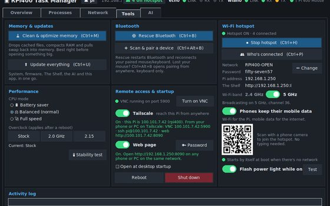

RPi500+ Task ManagerA Windows-style Task Manager: CPU, memory, temperature and power gauges, every running program with End task, network lights, a travel hotspot, Update everything and a small offline AI.
It opens in its own window. Anywhere on the Pi you can also press Ctrl+Shift+Esc, or find it in the menu under System Tools.
Not installed yet? Run Set Up My Apps.sh and say yes to the Task Manager, or in a Terminal: sudo bash ~/Desktop/"My Apps"/apps/task-manager/install.sh